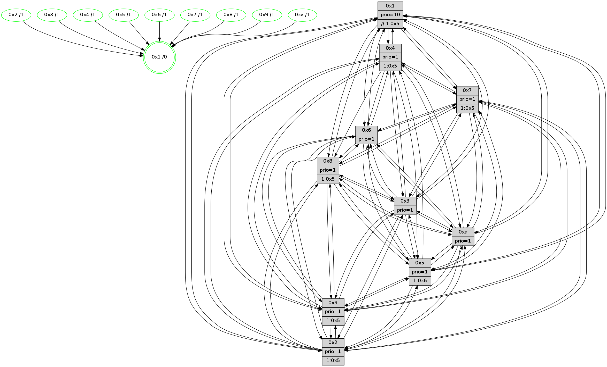

>> << IDX [start] -100 -25 -5 +0 +5 +25 +100 [1220.45533395]
 Previous packets
1215.008402 beacon0a(faad) #0 coord=01,02,03,04,05,06,07,0a,09,08 cycle=688.0ms assoc 64 9f b4
1215.018403 beacon09(faad) #0 coord=01,02,03,04,05,06,07,0a,09,08 cycle=688.0ms assoc 64 11 63
1215.028404 beacon08(faad) #0 coord=01,02,03,04,05,06,07,0a,09,08 cycle=688.0ms assoc 64 6b 2e
1215.040588 [Hello(10): seq=708 sym=6,2,3,8,7,5,9,4,1 sysInfo=hasWarning stat=6:11,0,1,1/2:14,10,4,10/3:0,10,9,11/8:15,3,15,2/7:2,4,7,6/5:14,3,0,15/9:11,9,9,3/4:6,3,7,0/1:3,4,0,1]
1215.043354 [Hello(8): seq=719 sym=5,2,3,7,9,6,10,1 sysInfo=hasWarning stat=5:5,3,8,0/2:15,1,5,10/3:8,6,10,0/7:3,6,0,0/9:11,4,10,3/6:6,3,8,13/10:0,10,13,4/1:2,7,5,0]
1215.047001 [Color(8) seq=374 @0:0 prio=1 >1.@2,1.@5,1.@6,1.@7]
1215.051891 [Color(5) seq=351 @0:0 prio=1 >1.@6,1.@7,1.@8,1.@9]
1215.054167 [STC(1) #0.193 tree-change,inconsistent-stability,stable,to-color d=0]
1215.060186 [Color(4) seq=332 @0:0 prio=1 >1.@2,1.@5,1.@6,1.@7]
1215.063278 [Hello(7): seq=775 sym=2,3,5,6,4,8,9,10,1 sysInfo=hasWarning stat=2:5,11,14,1/3:11,3,0,0/5:12,14,12,2/6:10,8,13,9/4:14,1,10,1/8:1,3,0,0/9:3,3,1,0/10:3,7,1,6/1:5,6,4,0]
1215.067693 [Color(7) seq=321 @0:0 prio=1 >1.@2,1.@5,1.@6,1.@9]
1215.072552 [Color(9) seq=348 @0:0 prio=1 >1.@2,1.@5,1.@6,1.@7]
----------------------------------------------------------------------
1215.726547 beacon01(faad) #0 coord=01,02,03,04,05,06,07,0a,09,08 cycle=688.0ms assoc
-- color-indic=1 64 2a cb
1215.736528 beacon02(faad) #0 coord=01,02,03,04,05,06,07,0a,09,08 cycle=688.0ms assoc 64 b9 fa
1215.746528 beacon03(faad) #0 coord=01,02,03,04,05,06,07,0a,09,08 cycle=688.0ms assoc 64 c3 b7
1215.756530 beacon04(faad) #0 coord=01,02,03,04,05,06,07,0a,09,08 cycle=688.0ms assoc 64 b4 5d
1215.766530 beacon05(faad) #0 coord=01,02,03,04,05,06,07,0a,09,08 cycle=688.0ms assoc 64 ce 10
1215.776530 beacon06(faad) #0 coord=01,02,03,04,05,06,07,0a,09,08 cycle=688.0ms assoc 64 40 c7
1215.786533 beacon07(faad) #0 coord=01,02,03,04,05,06,07,0a,09,08 cycle=688.0ms assoc 64 3a 8a
1215.796534 beacon0a(faad) #0 coord=01,02,03,04,05,06,07,0a,09,08 cycle=688.0ms assoc 64 4b 81
1215.806538 beacon09(faad) #0 coord=01,02,03,04,05,06,07,0a,09,08 cycle=688.0ms assoc 64 c5 56
1215.816537 beacon08(faad) #0 coord=01,02,03,04,05,06,07,0a,09,08 cycle=688.0ms assoc 64 bf 1b
1215.828314 [Hello(5): seq=776 sym=7,6,4,3,1,9,8,10,2 sysInfo=hasWarning stat=7:9,7,12,13/6:10,1,10,2/4:9,0,4,13/3:14,11,4,14/1:9,13,6,0/9:11,11,3,9/8:5,9,1,2/10:3,4,2,8/2:9,0,6,6]
1215.831441 [Hello(1): seq=685 sym=4,2,9,5,10,3,8,6,7 sysInfo=coloring-mode-on,ColoringModeRequestCalled stat=4:7,11,1,0/2:11,15,8,2/9:8,12,2,0/5:1,9,1,7/10:14,9,15,7/3:1,5,4,7/8:1,2,0,0/6:11,4,11,14/7:1,4,4,14]
1215.833966 [STC(5)->1 #0.193 tree-change,inconsistent-stability,stable,to-color d=1]
1215.835450 [Hello(6): seq=776 sym=2,3,5,4,7,9,8,10,1 sysInfo=hasWarning stat=2:3,6,1,0/3:5,5,1,12/5:11,9,4,2/4:13,8,0,5/7:6,2,11,12/9:11,10,9,9/8:7,7,5,5/10:0,12,7,12/1:3,14,6,1]
1215.839240 [Hello(3): seq=776 sym=1,7,6,2,4,8,9,10,5 sysInfo=hasWarning stat=1:0,1,4,0/7:8,3,2,12/6:3,6,0,0/2:15,7,5,0/4:9,15,5,11/8:1,15,0,4/9:9,3,8,15/10:10,15,0,4/5:10,7,13,0]
1215.843014 [STC(3)->1 #0.193 tree-change,inconsistent-stability,stable,to-color d=1]
1215.845519 [STC(8)->1 #0.193 tree-change,inconsistent-stability,stable,to-color d=1]
1215.847052 [STC(10)->1 #0.193 tree-change,inconsistent-stability,stable,to-color d=1]
1215.850306 [Color(10) seq=365 @0:0 prio=1]
1215.851712 [Color(6) seq=408 @0:0 prio=1]
1215.860434 [Hello(2): seq=772 sym=4,5,7,6,3,9,8,10,1 sysInfo=hasWarning stat=4:14,4,11,11/5:10,0,15,1/7:7,0,12,14/6:2,5,0,0/3:8,9,13,9/9:14,5,4,8/8:13,1,11,11/10:1,15,5,10/1:4,0,1,0]
1215.864868 [STC(2)->1 #0.193 tree-change,inconsistent-stability,stable,to-color d=1]
1215.866504 [Color(2) seq=352 @0:0 prio=1 >1.@5,1.@6,1.@7,1.@8]
----------------------------------------------------------------------
1216.514678 beacon01(faad) #0 coord=01,02,03,04,05,06,07,0a,09,08 cycle=688.0ms assoc
-- color-indic=1 64 96 ce
1216.524659 beacon02(faad) #0 coord=01,02,03,04,05,06,07,0a,09,08 cycle=688.0ms assoc 64 05 ff
1216.534659 beacon03(faad) #0 coord=01,02,03,04,05,06,07,0a,09,08 cycle=688.0ms assoc 64 7f b2
1216.544660 beacon04(faad) #0 coord=01,02,03,04,05,06,07,0a,09,08 cycle=688.0ms assoc 64 08 58
1216.554662 beacon05(faad) #0 coord=01,02,03,04,05,06,07,0a,09,08 cycle=688.0ms assoc 64 72 15
1216.564661 beacon06(faad) #0 coord=01,02,03,04,05,06,07,0a,09,08 cycle=688.0ms assoc 64 fc c2
1216.574661 beacon07(faad) #0 coord=01,02,03,04,05,06,07,0a,09,08 cycle=688.0ms assoc 64 86 8f
1216.584668 beacon0a(faad) #0 coord=01,02,03,04,05,06,07,0a,09,08 cycle=688.0ms assoc 64 f7 84
1216.594666 beacon09(faad) #0 coord=01,02,03,04,05,06,07,0a,09,08 cycle=688.0ms assoc 64 79 53
1216.604667 beacon08(faad) #0 coord=01,02,03,04,05,06,07,0a,09,08 cycle=688.0ms assoc 64 03 1e
1216.617807 [Hello(10): seq=709 sym=6,2,3,8,7,5,9,4,1 sysInfo=hasWarning stat=6:11,1,1,1/2:15,11,5,10/3:0,10,9,11/8:0,4,15,2/7:3,5,7,6/5:15,4,0,15/9:11,10,9,3/4:6,4,7,0/1:3,5,1,1]
1216.621172 [Hello(7): seq=776 sym=2,3,5,6,4,8,9,10,1 sysInfo=hasWarning stat=2:6,12,15,1/3:12,3,1,0/5:13,14,13,2/6:11,9,14,9/4:14,1,10,1/8:1,3,1,0/9:3,4,1,0/10:4,8,2,6/1:6,6,4,0]
1216.624317 [Color(7) seq=322 @0:0 prio=1 >1.@2,1.@5,1.@6,1.@9]
1216.625921 [Hello(9): seq=720 sym=2,5,3,4,7,6,8,10,1 sysInfo=hasWarning stat=2:8,7,2,8/5:0,13,4,6/3:8,15,9,0/4:6,11,2,0/7:10,4,6,1/6:4,12,15,11/8:6,4,4,3/10:13,7,8,4/1:1,0,8,1]
1216.628794 [Color(5) seq=352 @0:0 prio=1 >1.@6,1.@7,1.@8,1.@9]
1216.631989 [Hello(4): seq=776 sym=5,7,6,2,3,9,8,10,1 sysInfo= stat=5:14,8,4,0/7:6,12,7,1/6:15,1,8,12/2:4,5,15,14/3:14,12,9,12/9:12,12,11,11/8:0,4,1,0/10:0,7,0,14/1:13,12,6,1]
1216.637042 [Color(4) seq=333 @0:0 prio=1 >1.@2,1.@5,1.@6,1.@7]
1216.642134 [Color(9) seq=349 @0:0 prio=1 >1.@2,1.@5,1.@6,1.@7]
1216.646979 [Hello(8): seq=720 sym=5,2,3,7,9,6,10,1 sysInfo=hasWarning stat=5:5,4,8,0/2:0,2,6,10/3:8,6,10,0/7:4,7,0,0/9:11,5,10,3/6:6,4,9,13/10:1,11,14,4/1:2,7,6,0]
1216.649699 [Color(8) seq=375 @0:0 prio=1 >1.@5,1.@6,1.@7,1.@9]
----------------------------------------------------------------------
1217.302809 beacon01(faad) #0 coord=01,02,03,04,05,06,07,0a,09,08 cycle=688.0ms assoc
-- color-indic=1 64 52 c0
1217.312791 beacon02(faad) #0 coord=01,02,03,04,05,06,07,0a,09,08 cycle=688.0ms assoc 64 c1 f1
1217.322792 beacon03(faad) #0 coord=01,02,03,04,05,06,07,0a,09,08 cycle=688.0ms assoc 64 bb bc
1217.332792 beacon04(faad) #0 coord=01,02,03,04,05,06,07,0a,09,08 cycle=688.0ms assoc 64 cc 56
1217.342793 beacon05(faad) #0 coord=01,02,03,04,05,06,07,0a,09,08 cycle=688.0ms assoc 64 b6 1b
1217.352791 beacon06(faad) #0 coord=01,02,03,04,05,06,07,0a,09,08 cycle=688.0ms assoc 64 38 cc
1217.362793 beacon07(faad) #0 coord=01,02,03,04,05,06,07,0a,09,08 cycle=688.0ms assoc 64 42 81
1217.372799 beacon0a(faad) #0 coord=01,02,03,04,05,06,07,0a,09,08 cycle=688.0ms assoc 64 33 8a
1217.382797 beacon09(faad) #0 coord=01,02,03,04,05,06,07,0a,09,08 cycle=688.0ms assoc 64 bd 5d
1217.392798 beacon08(faad) #0 coord=01,02,03,04,05,06,07,0a,09,08 cycle=688.0ms assoc 64 c7 10
1217.405267 [Hello(5): seq=777 sym=7,6,4,3,1,9,8,10,2 sysInfo=hasWarning stat=7:9,7,12,13/6:11,2,10,2/4:10,1,4,13/3:15,11,5,14/1:9,13,6,0/9:11,12,3,9/8:6,10,2,2/10:4,5,3,8/2:10,1,7,6]
1217.408366 [Color(10) seq=366 @0:0 prio=1]
1217.410291 [Hello(3): seq=777 sym=1,7,6,2,4,8,9,10,5 sysInfo=hasWarning stat=1:1,2,4,0/7:9,4,2,12/6:3,7,0,0/2:0,8,6,0/4:9,0,5,11/8:2,0,0,4/9:10,4,8,15/10:11,0,0,4/5:11,8,13,0]
1217.413078 [Hello(2): seq=773 sym=4,5,7,6,3,9,8,10,1 sysInfo=hasWarning stat=4:15,5,11,11/5:11,1,15,1/7:8,1,12,14/6:2,5,0,0/3:8,9,13,9/9:15,6,4,8/8:14,2,11,11/10:2,15,5,10/1:4,0,1,0]
1217.415885 [Color(2) seq=353 @0:0 prio=1 >1.@5,1.@6,1.@7,1.@8]
1217.418039 [Color(3) seq=406 @0:0 prio=1]
1217.420421 [Hello(6): seq=777 sym=2,3,5,4,7,9,8,10,1 sysInfo=hasWarning stat=2:4,7,2,0/3:5,5,1,12/5:12,10,4,2/4:14,9,0,5/7:7,3,11,12/9:12,11,9,9/8:8,8,5,5/10:1,12,7,12/1:4,14,6,1]
1217.424862 [Color(6) seq=409 @0:0 prio=1]
----------------------------------------------------------------------
1218.090940 beacon01(faad) #0 coord=01,02,03,04,05,06,07,0a,09,08 cycle=688.0ms assoc
-- color-indic=1 64 ee c5
1218.100923 beacon02(faad) #0 coord=01,02,03,04,05,06,07,0a,09,08 cycle=688.0ms assoc 64 7d f4
1218.110922 beacon03(faad) #0 coord=01,02,03,04,05,06,07,0a,09,08 cycle=688.0ms assoc 64 07 b9
1218.120924 beacon04(faad) #0 coord=01,02,03,04,05,06,07,0a,09,08 cycle=688.0ms assoc 64 70 53
1218.130924 beacon05(faad) #0 coord=01,02,03,04,05,06,07,0a,09,08 cycle=688.0ms assoc 64 0a 1e
1218.140923 beacon06(faad) #0 coord=01,02,03,04,05,06,07,0a,09,08 cycle=688.0ms assoc 64 84 c9
1218.150923 beacon07(faad) #0 coord=01,02,03,04,05,06,07,0a,09,08 cycle=688.0ms assoc 64 fe 84
1218.160929 beacon0a(faad) #0 coord=01,02,03,04,05,06,07,0a,09,08 cycle=688.0ms assoc 64 8f 8f
1218.170929 beacon09(faad) #0 coord=01,02,03,04,05,06,07,0a,09,08 cycle=688.0ms assoc 64 01 58
1218.180929 beacon08(faad) #0 coord=01,02,03,04,05,06,07,0a,09,08 cycle=688.0ms assoc 64 7b 15
1218.192762 [Hello(10): seq=710 sym=6,2,3,8,7,5,9,4,1 sysInfo=hasWarning stat=6:12,2,1,1/2:0,12,5,10/3:1,11,9,11/8:1,5,15,2/7:4,6,7,6/5:15,5,0,15/9:12,11,9,3/4:6,5,7,0/1:4,6,1,1]
1218.195889 [Hello(9): seq=721 sym=2,5,3,4,7,6,8,10,1 sysInfo=hasWarning stat=2:9,8,2,8/5:1,13,4,6/3:9,0,9,0/4:6,11,2,0/7:10,4,6,1/6:5,13,15,11/8:7,5,4,3/10:14,8,8,4/1:1,0,8,1]
1218.198612 [Hello(4): seq=777 sym=5,7,6,2,3,9,8,10,1 sysInfo= stat=5:15,8,4,0/7:6,12,7,1/6:0,2,8,12/2:5,6,15,14/3:15,13,9,12/9:12,13,11,11/8:1,5,1,0/10:1,8,0,14/1:13,12,6,1]
1218.201746 [Color(4) seq=334 @0:0 prio=1 >1.@5,1.@6,1.@7,1.@8]
1218.203574 [Color(9) seq=350 @0:0 prio=1 >1.@5,1.@6,1.@7,1.@8]
1218.205987 [Color(5) seq=353 @0:0 prio=1 >1.@6,1.@7,1.@8,1.@9]
1218.210168 [Hello(7): seq=777 sym=2,3,5,6,4,8,9,10,1 sysInfo=hasWarning stat=2:7,13,15,1/3:13,4,1,0/5:14,15,13,2/6:12,10,14,9/4:14,2,10,1/8:2,4,1,0/9:4,5,1,0/10:5,9,2,6/1:6,7,4,0]
1218.213006 [Color(7) seq=323 @0:0 prio=1 >1.@5,1.@6,1.@9]
1218.218032 [Color(1) seq=458 @0:0 prio=10 >>1.@5,1.@6,1.@7]
1218.221673 [Hello(8): seq=721 sym=5,2,3,7,9,6,10,1 sysInfo=hasWarning stat=5:6,4,8,0/2:1,3,6,10/3:9,7,10,0/7:4,7,0,0/9:11,5,10,3/6:7,5,9,13/10:2,12,14,4/1:2,7,6,0]
1218.224706 [Color(8) seq=376 @0:0 prio=1 >1.@5,1.@6,1.@7,1.@9]
----------------------------------------------------------------------
1218.879072 beacon01(faad) #0 coord=01,02,03,04,05,06,07,0a,09,08 cycle=688.0ms assoc
-- color-indic=1 64 da dd
1218.889054 beacon02(faad) #0 coord=01,02,03,04,05,06,07,0a,09,08 cycle=688.0ms assoc 64 49 ec
1218.899055 beacon03(faad) #0 coord=01,02,03,04,05,06,07,0a,09,08 cycle=688.0ms assoc 64 33 a1
1218.909054 beacon04(faad) #0 coord=01,02,03,04,05,06,07,0a,09,08 cycle=688.0ms assoc 64 44 4b
1218.919055 beacon05(faad) #0 coord=01,02,03,04,05,06,07,0a,09,08 cycle=688.0ms assoc 64 3e 06
1218.929055 beacon06(faad) #0 coord=01,02,03,04,05,06,07,0a,09,08 cycle=688.0ms assoc 64 b0 d1
1218.939055 beacon07(faad) #0 coord=01,02,03,04,05,06,07,0a,09,08 cycle=688.0ms assoc 64 ca 9c
1218.949059 beacon0a(faad) #0 coord=01,02,03,04,05,06,07,0a,09,08 cycle=688.0ms assoc 64 bb 97
1218.959060 beacon09(faad) #0 coord=01,02,03,04,05,06,07,0a,09,08 cycle=688.0ms assoc 64 35 40
1218.969061 beacon08(faad) #0 coord=01,02,03,04,05,06,07,0a,09,08 cycle=688.0ms assoc 64 4f 0d
1218.981236 [Hello(1): seq=687 sym=4,2,9,5,10,3,8,6,7 sysInfo=coloring-mode-on,ColoringModeRequestCalled stat=4:7,12,1,0/2:13,1,9,2/9:8,13,2,0/5:1,9,2,7/10:0,11,0,7/3:3,7,5,7/8:3,4,1,0/6:13,6,11,14/7:1,4,4,14]
1218.983957 [Color(10) seq=367 @0:0 prio=1]
1218.985543 [Hello(5): seq=778 sym=7,6,4,3,1,9,8,10,2 sysInfo=hasWarning stat=7:10,8,12,13/6:12,3,10,2/4:10,1,4,13/3:0,12,5,14/1:9,14,6,0/9:11,12,3,9/8:7,11,2,2/10:5,6,3,8/2:11,2,7,6]
1218.988591 [Hello(3): seq=778 sym=1,7,6,2,4,8,9,10,5 sysInfo=hasWarning stat=1:2,3,4,0/7:10,5,2,12/6:4,8,0,0/2:0,8,6,0/4:10,1,5,11/8:3,1,0,4/9:11,5,8,15/10:12,0,0,4/5:11,9,13,0]
1218.991295 [Hello(6): seq=778 sym=2,3,5,4,7,9,8,10,1 sysInfo=hasWarning stat=2:4,7,2,0/3:5,5,1,12/5:13,11,4,2/4:15,10,0,5/7:8,4,11,12/9:13,12,9,9/8:9,9,5,5/10:2,12,7,12/1:4,15,6,1]
1218.994141 [Color(6) seq=410 @0:0 prio=1]
1218.996461 [Color(3) seq=407 @0:0 prio=1]
1219.002798 [Hello(2): seq=774 sym=4,5,7,6,3,9,8,10,1 sysInfo=hasWarning stat=4:0,6,11,11/5:11,2,15,1/7:9,2,12,14/6:3,6,0,0/3:8,10,13,9/9:0,7,4,8/8:15,3,11,11/10:3,15,5,10/1:4,1,1,0]
1219.007528 [Color(2) seq=354 @0:0 prio=1 >1.@5,1.@6,1.@7,1.@8]
----------------------------------------------------------------------
1219.667202 beacon01(faad) #0 coord=01,02,03,04,05,06,07,0a,09,08 cycle=688.0ms assoc
-- color-indic=1 64 66 d8
1219.677186 beacon02(faad) #0 coord=01,02,03,04,05,06,07,0a,09,08 cycle=688.0ms assoc 64 f5 e9
1219.687185 beacon03(faad) #0 coord=01,02,03,04,05,06,07,0a,09,08 cycle=688.0ms assoc 64 8f a4
1219.697186 beacon04(faad) #0 coord=01,02,03,04,05,06,07,0a,09,08 cycle=688.0ms assoc 64 f8 4e
1219.707186 beacon05(faad) #0 coord=01,02,03,04,05,06,07,0a,09,08 cycle=688.0ms assoc 64 82 03
1219.717184 beacon06(faad) #0 coord=01,02,03,04,05,06,07,0a,09,08 cycle=688.0ms assoc 64 0c d4
1219.727188 beacon07(faad) #0 coord=01,02,03,04,05,06,07,0a,09,08 cycle=688.0ms assoc 64 76 99
1219.737189 beacon0a(faad) #0 coord=01,02,03,04,05,06,07,0a,09,08 cycle=688.0ms assoc 64 07 92
1219.747190 beacon09(faad) #0 coord=01,02,03,04,05,06,07,0a,09,08 cycle=688.0ms assoc 64 89 45
1219.757190 beacon08(faad) #0 coord=01,02,03,04,05,06,07,0a,09,08 cycle=688.0ms assoc 64 f3 08
1219.770341 [Hello(10): seq=711 sym=6,2,3,8,7,5,9,4,1 sysInfo=hasWarning stat=6:13,3,1,1/2:1,13,5,10/3:2,12,9,11/8:2,6,15,2/7:5,7,7,6/5:0,6,0,15/9:13,12,9,3/4:7,6,7,0/1:5,7,1,1]
1219.773069 [Hello(7): seq=778 sym=2,3,5,6,4,8,9,10,1 sysInfo=hasWarning stat=2:8,14,15,1/3:14,5,1,0/5:15,15,13,2/6:13,11,14,9/4:14,2,10,1/8:3,5,1,0/9:4,5,1,0/10:6,10,2,6/1:7,8,4,0]
1219.776396 [Color(5) seq=354 @0:0 prio=1 >1.@6,1.@7,1.@8,1.@9]
1219.778587 [Color(7) seq=324 @0:0 prio=1 >1.@5,1.@6,1.@9]
1219.782284 [Color(1) seq=459 @0:0 prio=10 >>1.@5,1.@6,1.@7]
1219.784671 [Hello(8): seq=722 sym=5,2,3,7,9,6,10,1 sysInfo=hasWarning stat=5:7,4,8,0/2:2,4,6,10/3:10,8,10,0/7:4,7,0,0/9:11,5,10,3/6:8,6,9,13/10:3,13,14,4/1:3,7,6,0]
1219.788977 [Color(8) seq=377 @0:0 prio=1 >1.@5,1.@6,1.@7,1.@9]
1219.794713 [Hello(9): seq=722 sym=2,5,3,4,7,6,8,10,1 sysInfo=hasWarning stat=2:10,9,2,8/5:2,14,4,6/3:10,1,9,0/4:6,11,2,0/7:11,5,6,1/6:6,14,15,11/8:8,6,4,3/10:15,9,8,4/1:2,1,8,1]
1219.797534 [Color(9) seq=351 @0:0 prio=1 >1.@5,1.@6,1.@7,1.@8]
1219.800041 [Hello(4): seq=778 sym=5,7,6,2,3,9,8,10,1 sysInfo= stat=5:0,9,4,0/7:7,13,7,1/6:1,3,8,12/2:6,7,15,14/3:0,14,9,12/9:12,14,11,11/8:2,6,1,0/10:2,9,0,14/1:14,13,6,1]
1219.803184 [Color(4) seq=335 @0:0 prio=1 >1.@5,1.@6,1.@7,1.@8]